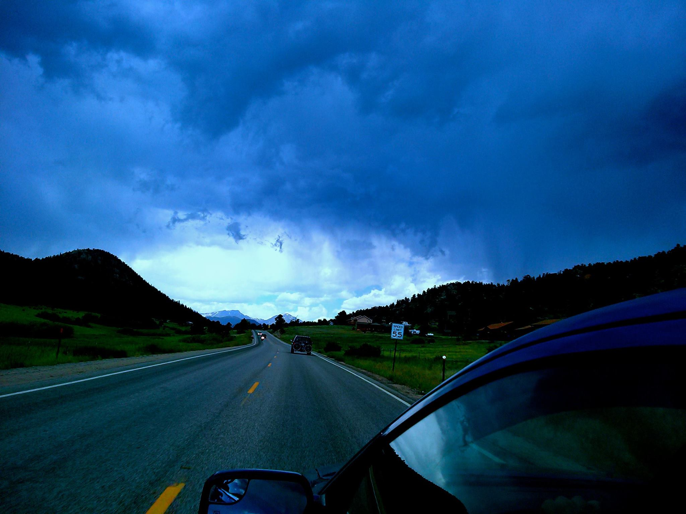

Hello!
I'm Josh and I'm a front-end web developer. Last December, I graduated from Grand Circus Detroit where I learned the skills needed to be an effective developer. The Grand Circus Front-End Coding Bootcamp is a 10 week, full-time immersive learning experience. I was taught coding skills through lectures, labs, hands on experience, and team projects. Skills such as; HTML5, CSS3, JavaScript(jQuery + Ajax), AngularJS, and much more. I'm also a student at Eastern Michigan University pursuing a bachelors degree in Communications and Technology. Currently, I'm seeking a position as a junior front-end web developer in order to assist team members problem-solve and implement the skills needed to get the job done right.
My interests in technology has existed since my childhood, but my passion for coding began when I took a Graphic Communications course at EMU. The course taught me a lot about the different facets of graphic design; typography, photography, color schemes, layout schemes, Photoshop CS, and most importantly HTML & CSS. I took a liking to HTML & CSS and their ability to help developers create webpages.
When my eyes are not glued to my text-editor, I enjoy spending time with my family and friends. One could also find me reading a good book or competing in a friendly game of tennis.
My Interests:
My Photography:
